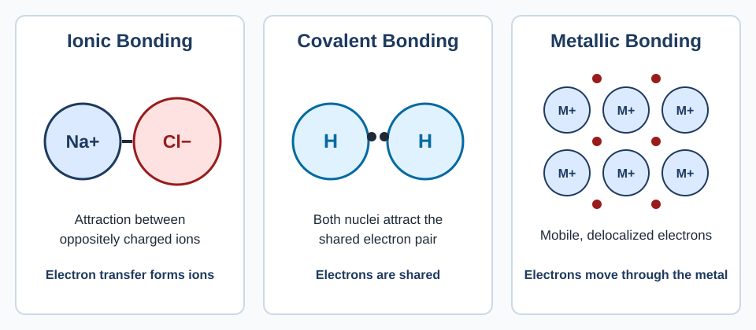
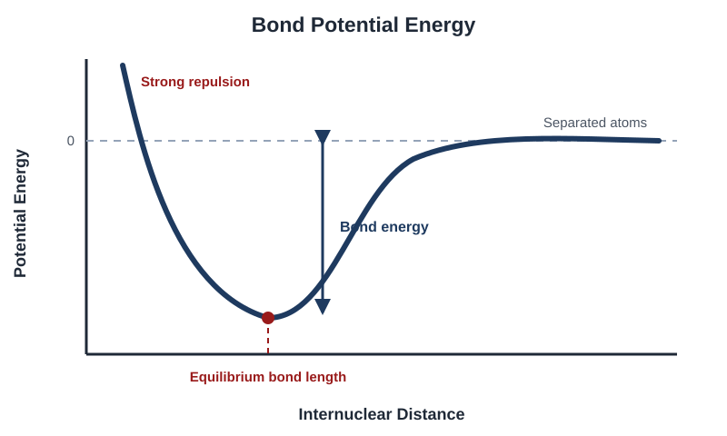
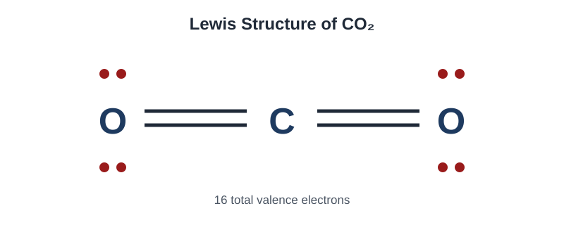
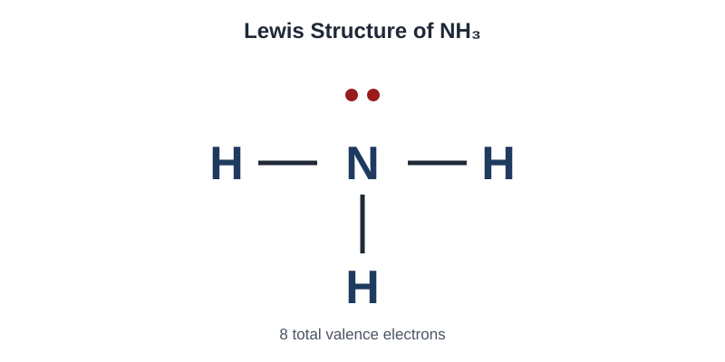
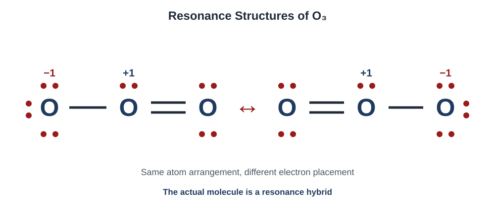
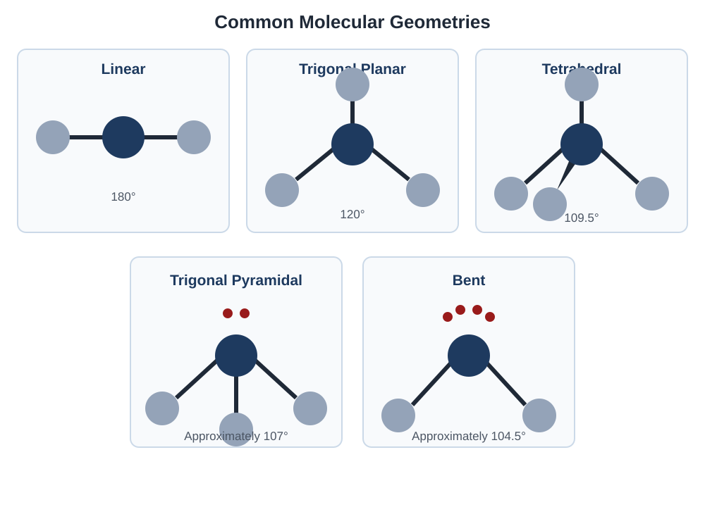
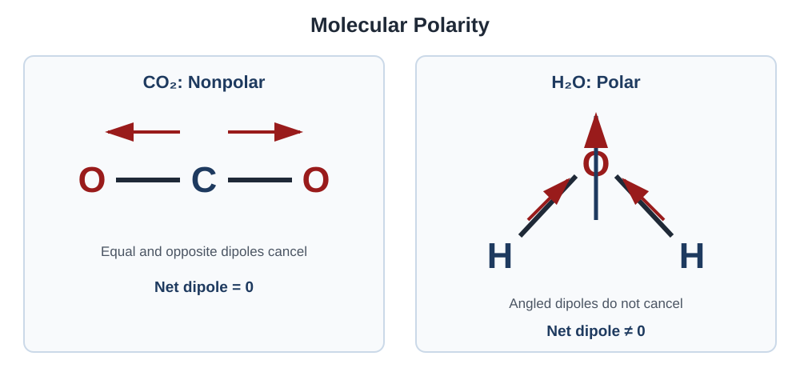

Compound Structure and Properties
Learn how atoms form chemical bonds and how bonding, structure, and electron arrangement determine the properties of compounds.
Topics
Types of Chemical Bonds
Compare ionic, covalent, and metallic bonding using electron behavior and electrostatic forces.
Lewis Structures
Draw Lewis structures and understand formal charge, resonance, and bonding patterns.
Molecular Geometry
Use VSEPR theory to predict molecular shapes, bond angles, and molecular polarity.
Solids, Metals, and Alloys
Connect particle-level structures to the properties of ionic solids, metals, and alloys.
Types of Chemical Bonds
Chemical bonds form because of electrostatic attractions between charged particles. The way electrons are shared or transferred determines the type of bonding present.
Ionic Bonding
Ionic bonding occurs between positively charged ions called cations and negatively charged ions called anions. The oppositely charged ions are held together by electrostatic attraction.
Ionic compounds commonly form when one or more electrons are transferred from a metal atom to a nonmetal atom. The metal loses electrons and becomes a cation, while the nonmetal gains electrons and becomes an anion.
Example: Sodium Chloride
A sodium atom loses one electron to form Na+. A chlorine atom gains that electron to form Cl−. The attraction between Na+ and Cl− holds the ionic compound together.
Cl + e− → Cl−
Covalent Bonding
Covalent bonding occurs when atoms share valence electrons. The shared electrons are attracted to the nuclei of both bonded atoms, creating an attraction that holds the atoms together.
Covalent bonds usually form between nonmetal atoms. A single bond contains one shared pair of electrons, a double bond contains two shared pairs, and a triple bond contains three shared pairs.
Metallic Bonding
Metals consist of positively charged metal ions surrounded by delocalized valence electrons. Delocalized electrons are not associated with only one atom and can move throughout the metal.
The attraction between the metal ions and the delocalized electrons holds the metal together. The mobility of these electrons helps explain why metals conduct electricity and thermal energy.
Comparing the Bond Types
| Bond Type | Electron Behavior | Commonly Forms Between | Basic Structure |
|---|---|---|---|
| Ionic | Electrons are transferred when ions form | Metal and nonmetal | Repeating arrangement of cations and anions |
| Covalent | Electrons are shared | Nonmetal atoms | Molecules or covalent networks |
| Metallic | Valence electrons are delocalized | Metal atoms | Metal ions surrounded by mobile electrons |

Bond Formation and Potential Energy
Bond formation can be understood by considering the potential energy of two atoms as the distance between their nuclei changes.
- When the atoms are far apart, there is very little attraction between them.
- As the atoms approach one another, attractions between each nucleus and the other atom’s electrons lower the potential energy.
- The lowest point on the potential-energy curve represents the most stable distance between the two nuclei.
- If the atoms move closer than this stable distance, repulsions between the nuclei and between the electron clouds cause the potential energy to increase sharply.
Bond energy: The energy required to separate the bonded atoms. A deeper potential-energy well represents a stronger bond.

Chemical Bonding Practice
Try each question before opening its solution.
Question 1: Interpreting the Energy Curve
What does the lowest point on a bond potential-energy curve represent?
Show solution
The lowest point represents the equilibrium bond length. At this distance, the bonded atoms have their minimum potential energy and are most stable.
The attractive and repulsive interactions balance at this distance.
Question 2: Very Short Internuclear Distance
Explain why the potential energy increases sharply when two bonded atoms are pushed much closer together than their equilibrium bond length.
Show solution
At very short distances, repulsions between the two positively charged nuclei and between the atoms’ electron clouds become very strong.
These repulsive interactions increase the system’s potential energy, making the arrangement less stable.
Question 3: Comparing Two Bonds
Bond A has an equilibrium bond length of 120 pm and requires 430 kJ/mol to break. Bond B has an equilibrium bond length of 160 pm and requires 250 kJ/mol to break.
Which bond is shorter, and which bond is stronger?
Show solution
Bond A is shorter because its equilibrium bond length is 120 pm, compared with 160 pm for Bond B.
Bond A is also stronger because more energy is required to break it: 430 kJ/mol compared with 250 kJ/mol.
Watch: Types of Chemical Bonds
Watch an explanation comparing ionic, covalent, and metallic bonding and the relationship between bond length and energy.
Lewis Structures
Lewis structures show how valence electrons are arranged in a molecule or polyatomic ion. Bonding electron pairs are represented by lines, while lone pairs are represented by pairs of dots.
Steps for Drawing a Lewis Structure
- Count the total number of valence electrons contributed by every atom.
- If the species has a negative charge, add electrons. If it has a positive charge, subtract electrons.
- Choose the central atom. The central atom is usually the least electronegative element, and hydrogen is never the central atom.
- Connect the central atom to each surrounding atom using a single bond. Each single bond contains two electrons.
- Add lone pairs to the surrounding atoms until they have complete octets. Hydrogen requires only two electrons.
- Place any remaining electrons on the central atom.
- If the central atom does not have an octet, convert lone pairs from surrounding atoms into double or triple bonds when appropriate.
Example: Drawing the Lewis Structure of CO2
Step 1: Count the Valence Electrons
Carbon contributes 4 valence electrons. Each oxygen contributes 6 valence electrons.
Step 2: Create the Initial Arrangement
Carbon is placed in the center because it is less electronegative than oxygen. A single bond is initially drawn between carbon and each oxygen atom.
Step 3: Complete the Octets
After lone pairs are placed on the oxygen atoms, carbon does not yet have a complete octet. One lone pair from each oxygen is converted into an additional bonding pair.
The finished structure has two carbon–oxygen double bonds. Each oxygen has two lone pairs, and all 16 valence electrons are represented.

Common Exceptions to the Octet Rule
- Hydrogen is stable with two electrons.
- Beryllium and boron can sometimes be stable with fewer than eight electrons.
- Elements in the third period and below can sometimes be surrounded by more than eight electrons.
- A species with an odd total number of valence electrons cannot give every atom a complete octet.
Lewis Structure Practice
Try drawing the complete structure before opening the solution.
Question 1: Lewis Structure of NH3
Draw the complete Lewis structure of NH3. Include all bonds and lone pairs.
Show solution
Nitrogen contributes 5 valence electrons, and the three hydrogen atoms contribute 3 electrons.
Nitrogen is the central atom. Three single bonds connect nitrogen to the three hydrogen atoms, using 6 electrons. The remaining 2 electrons form one lone pair on nitrogen.

Formal Charge
Formal charge is a bookkeeping method used to compare possible Lewis structures. It estimates the charge an atom would have if all bonding electrons were shared equally.
Choosing the Best Lewis Structure
When more than one Lewis structure is possible, the strongest contributor generally:
- Minimizes the size of the formal charges.
- Places negative formal charge on the more electronegative atom.
- Gives atoms complete octets whenever possible.
Example: Formal Charge in CO2
In the structure O=C=O, carbon has four valence electrons, no nonbonding electrons, and four bonds.
Each oxygen has six valence electrons, four nonbonding electrons, and two bonds.
Every atom has a formal charge of zero, making this a favorable Lewis structure for CO2.
Resonance
Resonance occurs when two or more valid Lewis structures have the same arrangement of atoms but different arrangements of electrons. These structures are called resonance forms.

Formal Charges in Ozone
In each resonance form of O3, the central oxygen has a formal charge of +1. The singly bonded terminal oxygen has a formal charge of −1, and the double-bonded terminal oxygen has a formal charge of zero.
Formal Charge and Resonance Practice
Try each question before opening its solution.
Question 1: Formal Charge in NH4+
In the Lewis structure of NH4+, nitrogen forms four single bonds and has no lone pairs. Calculate the formal charge on nitrogen.
Show solution
Nitrogen has 5 valence electrons, 0 nonbonding electrons, and 4 bonds.
The formal charge on nitrogen is +1. Each hydrogen has a formal charge of zero, giving the ion its overall 1+ charge.
Question 2: Choosing a CO2 Structure
Consider these two possible Lewis structures for CO2:
Structure B: O ≡ C — O
In Structure A, every atom has a formal charge of zero. In Structure B, one oxygen has a +1 formal charge and the other has a −1 formal charge. Which structure is the stronger contributor?
Show solution
Structure A is the stronger contributor. It gives every atom a formal charge of zero and avoids unnecessary charge separation.
Structure B gives opposite formal charges to the two oxygen atoms, making it a less favorable contributor.
Question 3: Understanding Resonance
A student claims that an ozone molecule rapidly switches between having its double bond on the left and having its double bond on the right. Is this description correct?
Show solution
No. The molecule does not switch back and forth between the two drawings.
The two drawings are resonance forms used to represent the molecule’s electron distribution. The actual ozone molecule is a resonance hybrid, so its two oxygen–oxygen bonds are equivalent.
Watch: Lewis Structures
Watch a worked example explaining how to draw Lewis structures, calculate formal charges, and recognize resonance.
Molecular Geometry
Molecular geometry describes the three-dimensional arrangement of atoms in a molecule. A molecule’s geometry affects properties such as polarity, intermolecular attractions, and reactivity.
VSEPR Theory
Valence Shell Electron Pair Repulsion theory, usually called VSEPR, predicts molecular geometry by assuming that regions of electron density repel one another. These regions arrange themselves as far apart as possible around the central atom.
Electron Geometry and Molecular Geometry
Electron geometry considers every electron domain around the central atom, including bonds and lone pairs. Molecular geometry describes only the arrangement of the bonded atoms.
Common Molecular Geometries
| Electron Domains | Lone Pairs | Molecular Geometry | Approximate Bond Angle | Example |
|---|---|---|---|---|
| 2 | 0 | Linear | 180° | CO2 |
| 3 | 0 | Trigonal planar | 120° | BF3 |
| 3 | 1 | Bent | Less than 120° | SO2 |
| 4 | 0 | Tetrahedral | 109.5° | CH4 |
| 4 | 1 | Trigonal pyramidal | Approximately 107° | NH3 |
| 4 | 2 | Bent | Approximately 104.5° | H2O |

How to Determine Molecular Geometry
- Draw the complete Lewis structure.
- Count the electron domains around the central atom. Remember that a multiple bond counts as one domain.
- Use the number of electron domains to determine the electron geometry.
- Count the lone pairs on the central atom.
- Use the bonded atoms and lone pairs to determine the molecular geometry.
Example: Geometry of NH3
Nitrogen has three nitrogen–hydrogen bonds and one lone pair. It therefore has four electron domains.
Four electron domains produce a tetrahedral electron geometry. Because one domain is a lone pair, the arrangement of the atoms is trigonal pyramidal.
Expanded Molecular Geometries
Central atoms from the third period and below can sometimes have five or six electron domains. These arrangements produce additional molecular geometries.
| Electron Domains | Lone Pairs | Molecular Geometry | Ideal Bond Angles | Example |
|---|---|---|---|---|
| 5 | 0 | Trigonal bipyramidal | 90°, 120°, and 180° | PCl5 |
| 5 | 1 | Seesaw | Less than 90° and 120° | SF4 |
| 5 | 2 | T-shaped | Approximately 90° and 180° | ClF3 |
| 5 | 3 | Linear | 180° | XeF2 |
| 6 | 0 | Octahedral | 90° and 180° | SF6 |
| 6 | 1 | Square pyramidal | Approximately 90° | BrF5 |
| 6 | 2 | Square planar | 90° and 180° | XeF4 |
Bond Polarity
A bond is polar when its electrons are shared unequally. The more electronegative atom attracts the shared electrons more strongly and develops a partial negative charge. The other atom develops a partial positive charge.
Molecular Polarity
A molecule’s polarity depends on both its polar bonds and its three-dimensional geometry. The individual bond dipoles must be considered as vectors with both direction and magnitude.
- Determine whether the molecule contains polar bonds.
- Determine the molecule’s geometry using its Lewis structure.
- Determine whether the bond dipoles cancel because of symmetry.
- If the dipoles cancel, the molecule is nonpolar. If they do not cancel, the molecule is polar.

Example: CO2 and H2O
Each carbon–oxygen bond in CO2 is polar. However, CO₂ is linear, so its two equal bond dipoles point in opposite directions and cancel. The molecule is therefore nonpolar.
Each oxygen–hydrogen bond in H2O is also polar. Because H₂O is bent, the bond dipoles do not point in opposite directions and cannot cancel. The molecule therefore has a net dipole and is polar.